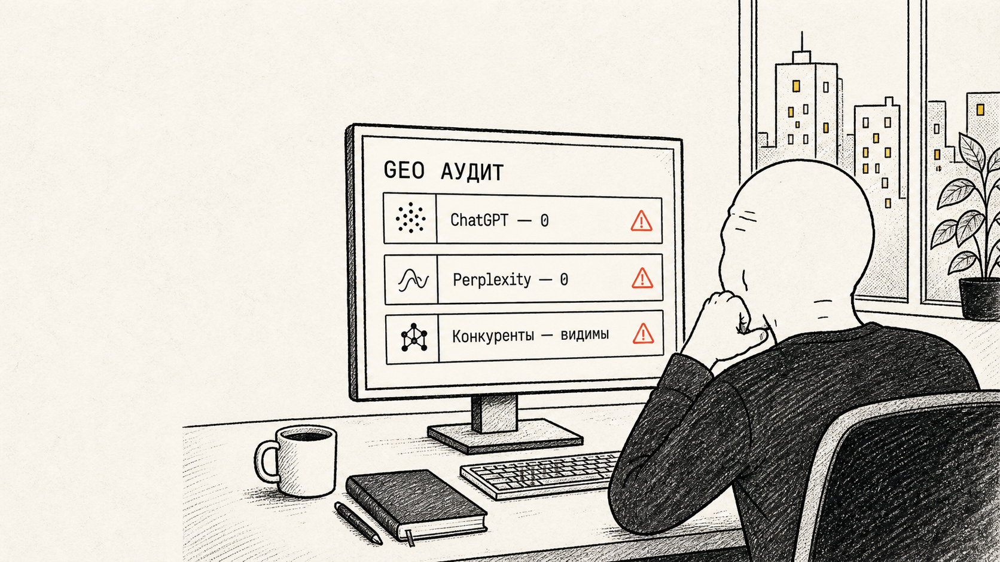
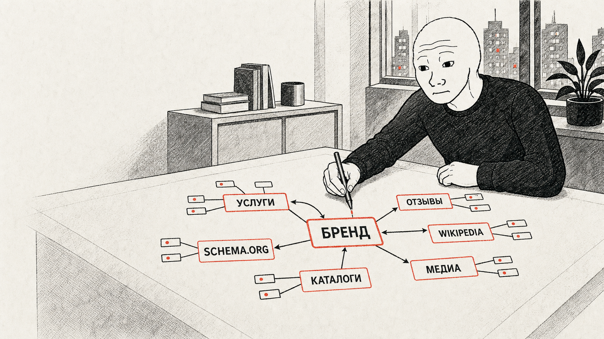
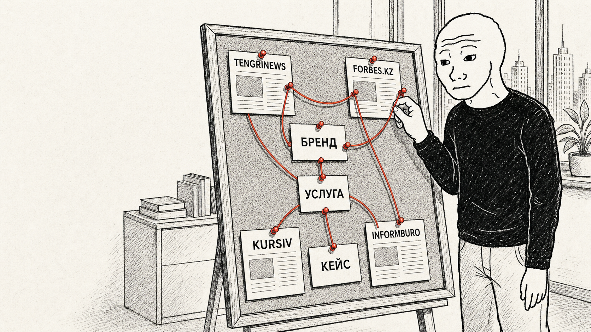
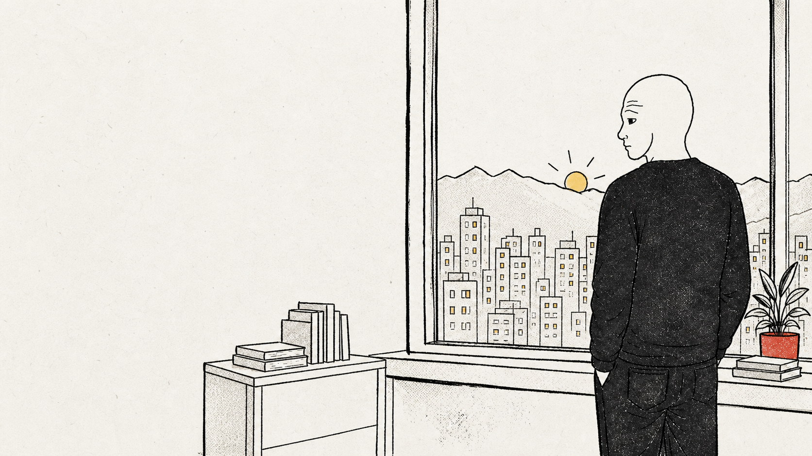

01
Аудит ответов
Запросы, конкуренты, упоминания, цитаты и реальные скриншоты из AI-систем.
ChatGPT, Perplexity, Gemini и Claude должны знать, называть и цитировать ваш бизнес.
Аудитируем ответы моделей, выстраиваем факты и источники, исправляем сайт и измеряем результат.

Находим коммерческие запросы, где модели не видят вас или отдают ответ конкурентам.
Собираем сущности, факты, страницы и независимые источники в одну понятную систему.
Повторяем измерения и показываем изменение видимости и цитируемости.
Не обещаем магию алгоритмов. Разбираем, что AI знает о бренде, на какие источники опирается и чего ему не хватает для уверенного ответа.
Запросы, конкуренты, упоминания, цитаты и реальные скриншоты из AI-систем.

Бренд, услуги, отзывы, Schema.org, каталоги и медиа связываются в граф знаний.

Проверяем, где факты подтверждаются независимо и какие публикации нужно создать.

Повторяем измерения на 30-й и 60-й день и фиксируем изменение ответов моделей.
На выходе — ясная картина: где бренд теряется, почему AI выбирает конкурентов и что делать следующие 90 дней.
Только для квалифицированных потенциальных клиентов.
Для первых клиентов: одна ниша, один город, один основной язык.
Русский + казахский и несколько городов рассчитываются отдельно.
60 дней внедрения и измерений для первых двух клиентов WAN GEO.
Клиент быстро согласовывает материалы.
Предоставляет доступ к сайту и аналитике.
Разрешает показать обезличенные результаты.
Даёт честный отзыв, если доволен.
Начнём с пяти коммерческих запросов и покажем три разрыва, которые мешают AI выбрать ваш бренд.